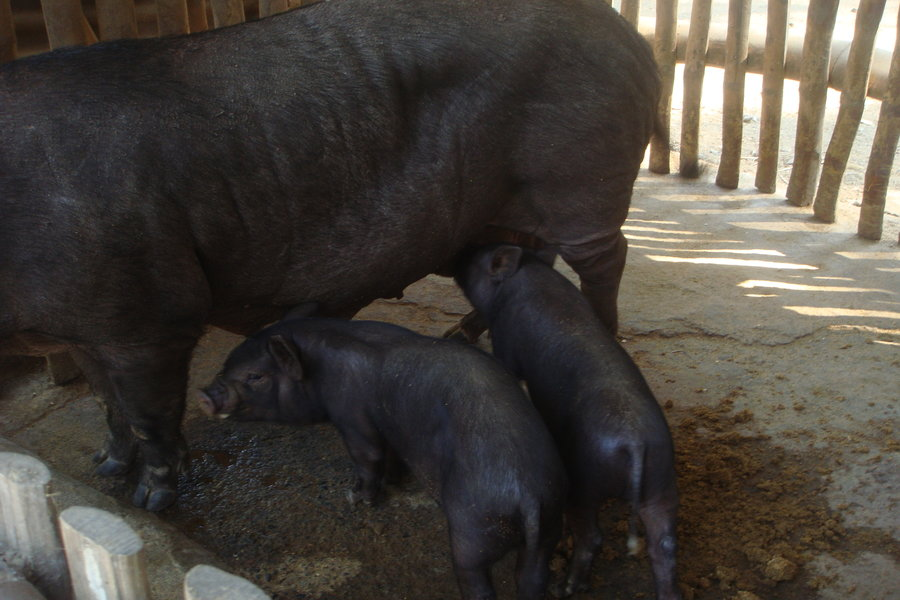
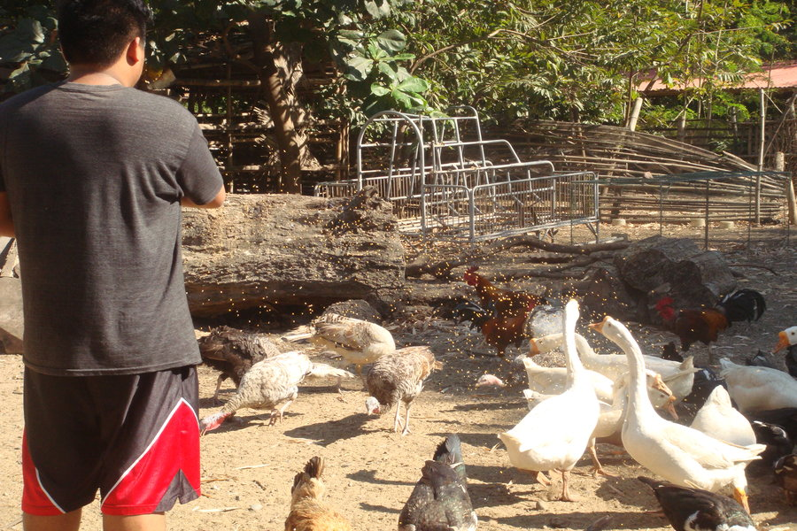
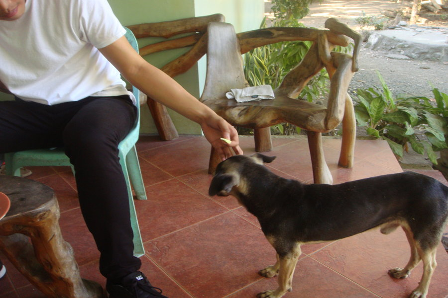
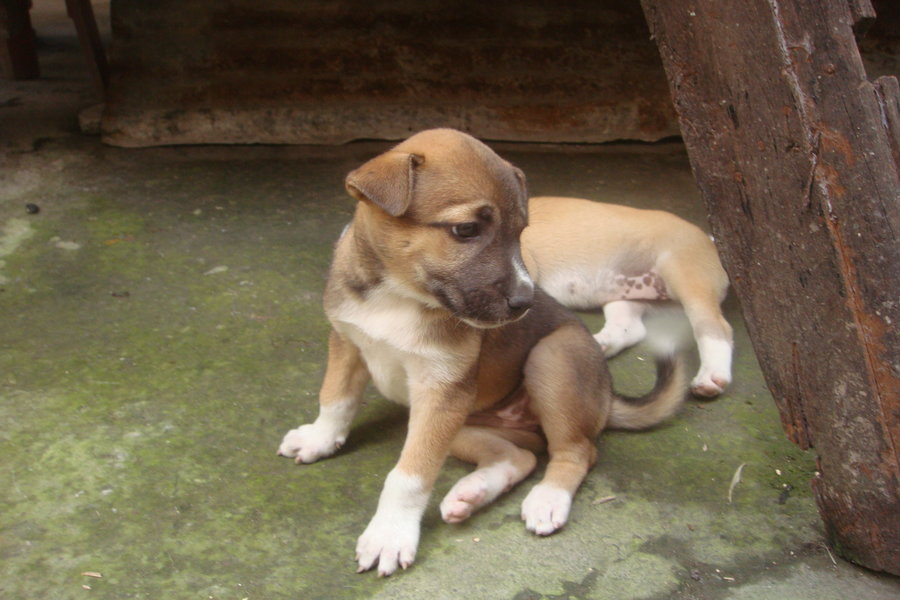

Treat animals humanely. They shall be kept away from any harm if possible. Otherwise, they should feel pain the least amount as possible.

Give them basic needs. We are tasked to provide proper food, water, proper handling and comfortable environment for the animals in any means necessary.

Don't adopt an animal if you can't take care of him/her. Adopting an animal is a resposibility that not all can bear. Adopting an animal makes you in charge of another life aside from your own.

They deserve to be loved as equal. Animals can hear, smell, taste, feel and see, and also a family to take care of just like you and me.